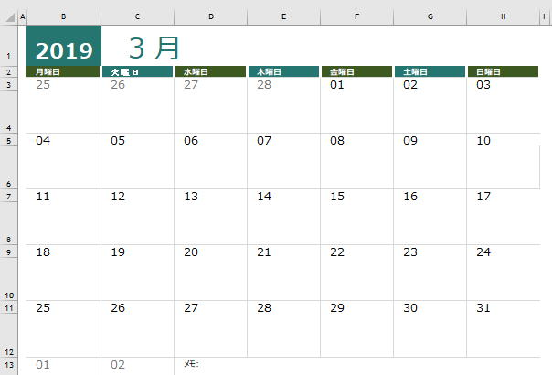

エクセルの日付と時刻のまとめ

エクセルに入力するデータとしては、数値、文字、日付時刻などがありますが、日付時刻はかなり特殊なものとなっています。
日付時刻の扱いは独特であり、
エクセルのワークシートだけでなくマクロVBAでも他のプログラミング言語でも扱いが面倒なものです、
ここでは日付時刻についての関数や応用方法についてまとめています。
日付時刻の基本ワークシート関数
DATE関数（年,月,日を日付に）
DATEVALUE関数（日付を表す文字列を日付に）
YEAR関数（日付を年に）
MONTH関数（日付を月に）
DAY関数（日付を日に）
TIME関数（時,分,秒を時刻に）
TIMEVALUE関数（時刻を表す文字列を時刻に）
HOUR関数（時刻を時に）
MINUTE関数（時刻を分に）
SECOND関数（時刻を秒に）
TODAY関数（現在の日付）
NOW関数（現在の日付と時刻）
WORKDAY関数（稼動日数だけ前後の日付）
NETWORKDAYS関数（稼動日の日数）
DATEDIF関数（年齢・勤続年数）
EDATE関数（月数だけ前後の日付）
EOMONTH関数（月数だけ前後の月の最終日）
WEEKDAY関数（曜日に変換）
WEEKNUM関数（その年の何週目）
日付時刻の表示形式・入力規則
表示形式.24時間を超える時間
日付表示の桁位置を揃える
入力規則.日付・時刻
日付時刻の応用
日付、時刻に関するあれこれ「元年」表記追加）
１年後の日付、○か月後の日付
数値を時刻に変換
時間計算で困ったときの確実な対処方法
マクロVBAでの日付時刻
第45回.VBA関数（Format）
日付のオートフィルタ（AutoFilter）
日付の検索（配列の使用）
同じテーマ「エクセル関数応用」の記事
VLOOKUP 左側の列を取得(MATCH,INDEX,OFFSET)
SUMIF関数の良くある間違い
論理式とは条件式とは(IF関数,AND関数,OR関数)
先頭の数値、最後の数値を取り出す
最後の空白（や指定文字）以降の文字を取り出す
SUMIFの間違いによるパフォーマンスの低下について
数値範囲で表検索するVLOOKUP近似一致
エクセルの日付と時刻のまとめ
連続数値部分を取り出し記号で連結
指数近似/対数近似/累乗近似（掲載順位とCTR）
ジャンプ・セル選択の応用（空欄を埋める、1行置きに挿入）
新着記事NEW ・・・新着記事一覧を見る
VBA100本ノック 100本目：WEBから100本ノックのリストを取得｜VBA練習問題（3月3日）
VBA100本ノック 99本目：自動席替え（行列と前後左右が全て違うように）｜VBA練習問題（3月2日）
VBA100本ノック 98本目：席替えルールが守られているか確認｜VBA練習問題（3月1日）
VBA100本ノック 97本目：Accessデータを取得（グループ集計）｜VBA練習問題（2月27日）
VBA100本ノック 96本目：Accessデータを取得（マスタ結合&抽出）｜VBA練習問題（2月26日）
VBA100本ノック 95本目：図形のテキストを検索するフォーム作成｜VBA練習問題（2月24日）
VBA100本ノック 94本目：表範囲からHTMLのtableタグを作成｜VBA練習問題（2月23日）
VBA100本ノック 93本目：複数ブックを連結して再分割｜VBA練習問題（2月22日）
VBA100本ノック 92本目：セルの色を16進で返す関数｜VBA練習問題（2月20日）
VBA100本ノック 91本目：時間計算（残業時間の月間合計）｜VBA練習問題（2月19日）
アクセスランキング ・・・ ランキング一覧を見る
1.最終行の取得（End,Rows.Count）｜VBA入門
2.RangeとCellsの使い方｜VBA入門
3.変数宣言のDimとデータ型｜VBA入門
4.マクロって何？VBAって何？｜VBA入門
5.Range以外の指定方法（Cells,Rows,Columns）｜VBA入門
6.セルのコピー&値の貼り付け（PasteSpecial）｜VBA入門
7.繰り返し処理（For Next)｜VBA入門
8.セルに文字を入れるとは（Range,Value）｜VBA入門
9.マクロはどこに書くの（VBEの起動）｜VBA入門
10.とにかく書いてみよう（Sub,End Sub）｜VBA入門
このサイトがお役に立ちましたら「シェア」「Bookmark」をお願いいたします。
記述には細心の注意をしたつもりですが、
間違いやご指摘がありましたら、「お問い合わせ」からお知らせいただけると幸いです。
掲載のVBAコードは動作を保証するものではなく、あくまでVBA学習のサンプルとして掲載しています。
掲載のVBAコードは自己責任でご使用ください。万一データ破損等の損害が発生しても責任は負いません。